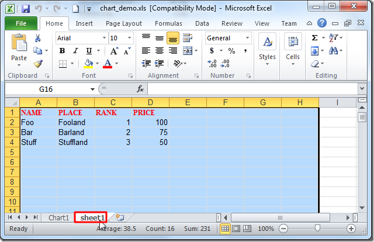
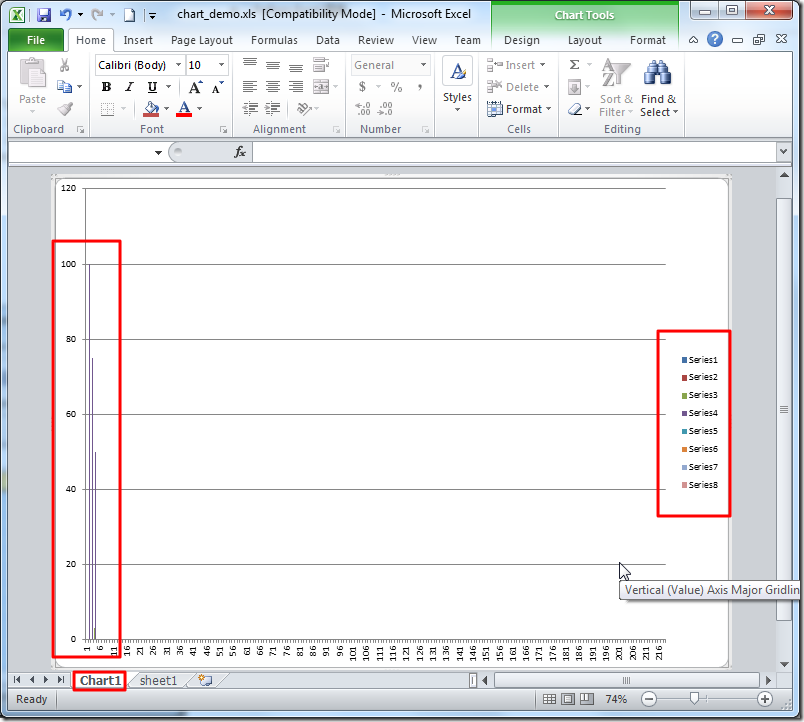
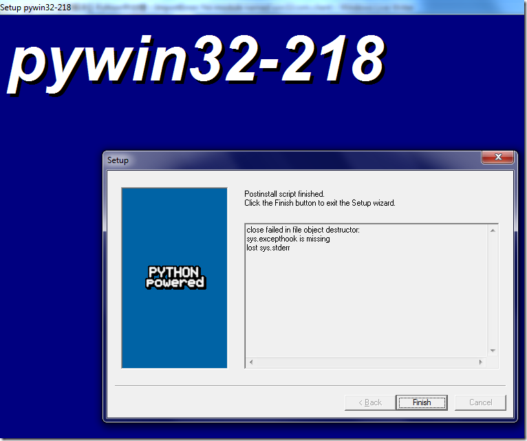

win32com.client
此处用win32com.client去处理Excel中的图表，比如Chart、Graph等。
处理Excel的图表
在当前文件夹中新建一个空的xls文件：chart_demo.xls
用（Python 2的）代码：
#!/usr/bin/python
# -*- coding: utf-8 -*-
"""
Function:
【已解决】Python中处理操作Excel中的图表（Chart，Graph）
https://www.crifan.com/python_process_excel_chart_graph
Author: Crifan Li
Version: 2012-12-25
Contact: admin at crifan dot com
"""
import os
from win32com.client import Dispatch
#from win32com.client import *
def excelChart():
xl = Dispatch("Excel.Application")
#xl = win32com.client.Dispatch("Excel.Application")
print "xl=",xl
#[1] Fail
# xlsPath = "chart_demo.xls"
# wb = xl.Workbooks.open(xlsPath) #pywintypes.com_error
#[2] Fail
# xlsPath = "D:\tmp\tmp_dev_root\python\excel_chart\chart_demo.xls"
# absPath = os.path.abspath(xlsPath)
# print "absPath=",absPath #absPath= D:\tmp\tmp_dev_root\python\excel_chart\ mp mp_dev_root\python\excel_chart\chart_demo.xls
# wb = xl.Workbooks.open(absPath) #pywintypes.com_error
#[3] Fail
# xlsPath = "D:\tmp\tmp_dev_root\python\excel_chart\chart_demo.xls"
# normalPath = os.path.normpath(xlsPath)
# print "normalPath=",normalPath #normalPath= D: mp mp_dev_root\python\excel_chart\chart_demo.xls
# wb = xl.Workbooks.open(normalPath) #pywintypes.com_error
#[4] Fail
# rawPath = r"chart_demo.xls"
# wb = xl.Workbooks.open(rawPath) #pywintypes.com_error
#[5] OK
xlsPath = "chart_demo.xls"
absPath = os.path.abspath(xlsPath)
print "absPath=",absPath #absPath= D:\tmp\tmp_dev_root\python\excel_chart\chart_demo.xls
wb = xl.Workbooks.open(absPath) #OK
#[6] OK
# rawPath = r"D:\tmp\tmp_dev_root\python\excel_chart\chart_demo.xls"
# wb = xl.Workbooks.open(rawPath) # OK
xl.Visible = 1
ws = wb.Worksheets(1)
ws.Range('$A1:$D1').Value = ['NAME', 'PLACE', 'RANK', 'PRICE']
ws.Range('$A2:$D2').Value = ['Foo', 'Fooland', 1, 100]
ws.Range('$A3:$D3').Value = ['Bar', 'Barland', 2, 75]
ws.Range('$A4:$D4').Value = ['Stuff', 'Stuffland', 3, 50]
wb.Save()
wb.Charts.Add()
wc1 = wb.Charts(1)
if __name__ == "__main__":
excelChart()
效果：
- Excel单元格内容
- 
- Excel对应图表效果
- 
常见问题
ImportError: No module named win32com.client
代码：
from win32com.client import Dispatch
会报错：
D:\tmp\tmp_dev_root\python\excel_chart>excel_chart.py
Traceback (most recent call last):
File "D:\tmp\tmp_dev_root\python\excel_chart\excel_chart.py", line 13, in <module>
from win32com.client import Dispatch
ImportError: No module named win32com.client
解决办法：下载和安装pywin32
具体步骤
去
http://sourceforge.net/projects/pywin32/files/pywin32/
下载
http://sourceforge.net/projects/pywin32/files/pywin32/Build%20218/
此处Win7 64位 + Python 2.7.3对应的版本：
pywin32-218.win-amd64-py2.7.exe
然后去双击安装，一路默认设置：

即可。